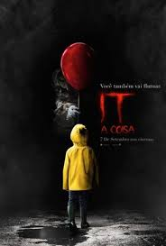

Timeline 80 - 2018 TECH
Menu Linha do Tempo
|
Anos 80 à 84
|
Anos 85 à 89
|
Anos 90 à 95
|
Anos 95 à 99
|
De 2000 à 2004
|
De 2005 à 2009
|
De 2010 à 2014
|
De 2015 à 2018
Avanços Tecnológicos:
2016 - Foguete reutilizável (Falcon 9) aterrissa no Oceano Atlântico
2016- The Seeing AI (Microsoft)
Filme:
2016 - Estrelas Além do Tempo

2017 - It - A Coisa (remake)